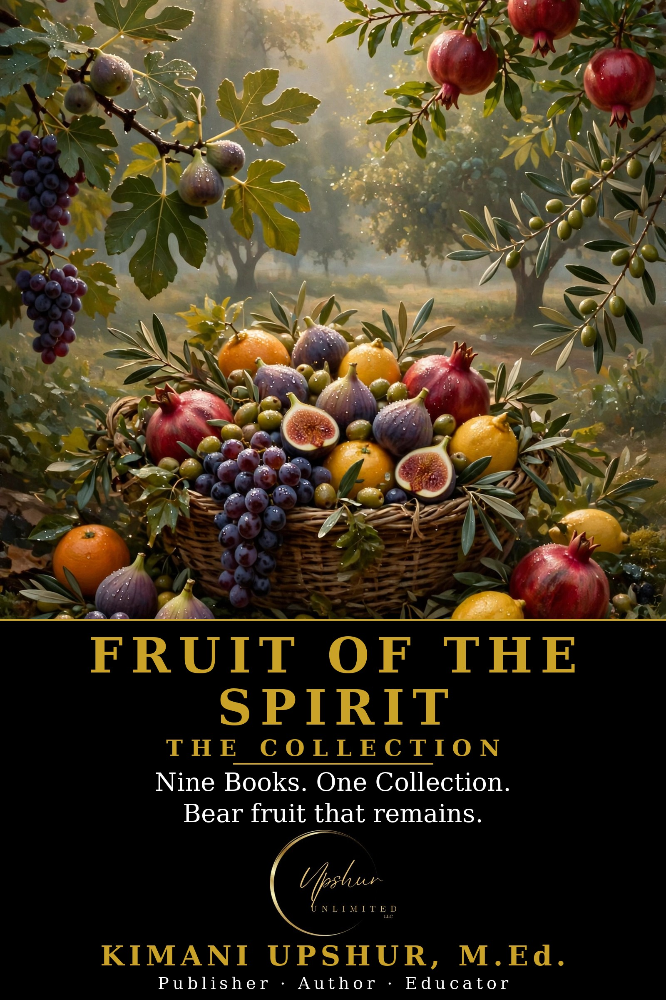

Home / Books / Box Sets & Collections
The Fruit of the Spirit Collection

The Fruit of the Spirit Collection by Kimani Upshur, M.Ed. takes a big subject and makes it simple — clear, biblical, and practical from the first page. Built on the Made Simple framework, it gives you the core of the subject without the overwhelm. Read it in a weekend; live it for a lifetime.
Get This Book
Ebook — also check your favorite retailer.
- Publisher
- Upshur Unlimited, LLC
- Author
- Kimani Upshur, M.Ed.
- Format
- Ebook
- Language
- English
Try the Free Companion App
There's a free interactive companion to this book. Fruit of the Spirit Tracker — Track the fruit of the Spirit in your daily life. Use it anytime — no signup needed.
Readers Also Browse
More Box Sets & Collections titles.